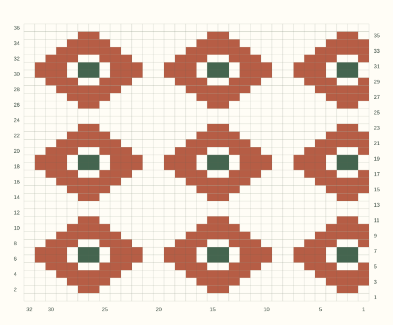

FREE PRINTABLE PAPER / A4 + US LETTERA blank page.
A blank page.
A good beginning.
Graph paper for working it out. Dots for finding your flow.
A little structure for whatever comes next.
No account neededPrint-ready PDFAlways a blank canvas
 A LITTLE
A LITTLESTRUCTURE.
A lot of possibility.
PRINT A PAGE.
START SOMETHING.
PAPER No. 01 / A FRESH STARTSTART SOMETHING.
NEW / THE COLORWORK STUDIOFrom your swatch
From your swatch
to your own pattern.
Apply your blocked gauge, paint a colorwork motif and see how it repeats. Download a numbered chart, row-by-row color runs, or an editable project.
Open the free chart maker ↗
YOUR GAUGE. YOUR COLORS. YOUR NEXT IDEA.FOR THE NOTE-TAKERSTHE PATTERN-MAKERSTHE LET’S-TRY-THAT THINKERS
THE EVERYDAY COLLECTIONThree good places
Three good places
to begin.
Choose a sheet. Download a PDF.
Your next idea can take it from here.

Every template includes A4 & US Letter PDFs.Looking for more? Browse all 23 paper templates →
THE EXPANDED PAPER LIBRARY
Browse all paper ↗23 useful sheets. One good starting point.
Notes, music, math, drawing and crafts. Actual previews and ready-to-print PDFs.
THE MAKE-IT-YOURS DESKAlmost right?
Almost right?
Make it your own.
A different color, a little more space.
Your paper, made in your browser.
YOUR PAGE, AT A GLANCE
A4 · 210 × 297 mm · 5 mm squares
Screen preview is scaled. Downloads retain the selected physical dimensions.
A NOTE BEFORE YOU PRINTSmall details.
Small details.
A better page.
The screen is a preview.
The printed ruler is your check.
Pick the right paper.
Choose A4 for 210 × 297 mm, or US Letter for 8.5 × 11 inches. Match the PDF and your printer’s loaded paper.
Keep the actual size.
Select Actual size / 100% in your PDF viewer. Turn off “Fit” and “Shrink oversized pages” to preserve the spacing.
Check the little ruler.
Measure the 50 mm line at the bottom of your print. If it is off, check scaling and your printer before using the grid for measurements.
GOOD TO KNOWBefore the
Before the
first mark.
Do I need an account or a subscription?
No. All ready-made templates and the custom generator are free to use, without an account.
Are the downloads blank?
Yes. PDF and SVG downloads contain the chosen grid, ruling, guides or panels. Some sheets include labels such as axis values, section headings or shot numbers. Ready-made PDFs include a 50 mm print-check ruler; completed notes, music and illustrations are not included.
Why does the printed spacing look smaller?
PDF viewers often select Fit by default. Choose Actual size or 100%, match the printer paper size to the PDF, and measure the 50 mm calibration line. Printer calibration can also affect the result.